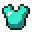
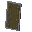
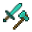
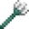
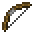
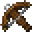
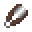

Everything
Soulbound
Keep item on death. (Cannot be used with Curse of Vanishing).
Armor & Shield
All Armor
Tank
Increased durability.
Toughness
Adds armor toughness to armor.
Helmet
No Rest
Sleep time constantly reset to 0, causing no phantoms to spawn. Cannot be used with Unrest).
Unrest
Gives night vision but phantoms will always spawn at night around you.
Chestplate
Gung Ho
Halves health but triples attack damage. Cannot be used with Life).
Life
Increases maximum health when worn. Cannot be used with Gung Ho).
Sacrifice
Damages mob that killed you based on your experience level.
 Leggings
Leggings
Warp
Gives chance to teleport you away from damage.
 Boots
Boots
Magma Walker
Turns lava into magma for a short time when walking near it. Cannot be used with Depth Strider, Frost Walker, and Void Walker).
Void Walker
Spawns obsidian in air blocks to help players cross the void. Cannot be used with Depth Strider, Frost Walker, and Magma Walker).
Shield
Hard Bounce
Projectiles hitting the shield will bounce away at a faster rate. Cannot be used with Iron Defense).
Iron Defense
Shield absorbs percentage of damage when not blocking. Cannot be used with Hard Bounce).
Magic Guard
Negative potion effects removed when in offhand.
Weapons & Axe
All Weapons
Exp. Share
Increased experience drop from killing mobs and breaking blocks.
 Sword
Sword
Beheading
Adds a chance to drop mob heads on death.
Brine
Doubles damage if opponent is at half health or less.
Knock Up
Knocks opponent into the air on hit. Cannot be used with Knockback).
Quick Strike
Speeds up charge time. Cannot be used with Sharpness, Smite, Bane of Arthropods, Fire Aspect, and Shock Aspect).
 Axe
Axe
Shock Aspect
Chance to strike attacked mobs with lightning. Cannot be used with Quick Strike).
Quick Strike
Speeds up charge time. Cannot be used with Sharpness, Smite, Bane of Arthropods, Fire Aspect, and Shock Aspect).
Trident
Transmutation
Turns mob loot into sea-based loot.
Drowned
Drowns non-water mobs for a short time.
Sniper
Increased projectile speed.
Bow
Overkill
Shoots arrows in inventory from bow on left click.
Detonator
Explosions on arrow impact. Decreases creeper activation time. Cannot be used with Hollow Point).
Hollow Point
Deals more damage to armored opponents. Can deal damage to Endermen and shielded Withers. Cannot be used with Detonator).
Sniper
Increased projectile speed.
Crossbow
Pillage
Increase drops from killed mobs.
Stone Throw
Does more damage to flying mobs.
Detonator
Explosions on arrow impact. Decreases creeper activation time. Cannot be used with Hollow Point).
Hollow Point
Deals more damage to armored opponents. Can deal damage to Endermen and shielded Withers. Cannot be used with Detonator).
Tools & Elytra
All Tools
Exp. Share
Increased experience drop from killing mobs and breaking blocks.
Height++
Increases block break radius in the up/down direction.
Smeltery
Smelt broken items. Cannot be used with Silk Touch).
Telepathy
All mined blocks go straight into your inventory.
Width++
Increases block break radius in the left/right direction.
Elytra
Armored
Adds armor points to Elytra.
Frequent Flyer
Gives player creative flight at cost of durability. Cannot be used with Icarus).
Icarus
Flying upwards will increase velocity. Cannot be used with Frequent Flyer).
 Carrot on a Stick
Carrot on a Stick
Irene's Lasso
Grab animals to place elsewhere. Cannot be used with Wand).
Wand
Place blocks from offhand in a radius. Cannot be used with Irene's Lasso).
 Hoe
Hoe
Flower Gift
Right click flowers to drop flowers. Cannot be used with Gold Digger and Soul Reaper).
Gold Digger
Drop gold and experience when breaking cropsand nether warts. Cannot be used with Flower Gift and Soul Reaper).
Sand Veil
Lowers accuracy of attacked entity's hits.
Soul Reaper
Has a large chance for killed player to drop Soulbound items. Cannot be used with Flower Gift and Gold Digger).
Splatter Fest
Shoots eggs in inventory from hoe on left click.
 Fishing Rod
Fishing Rod
Angler
Catch an additional fish per level.
Fried
All caught fish are automatically cooked.
Shears
Moisturize
Add moisture to blocks, waterlogging or changing certain block types.